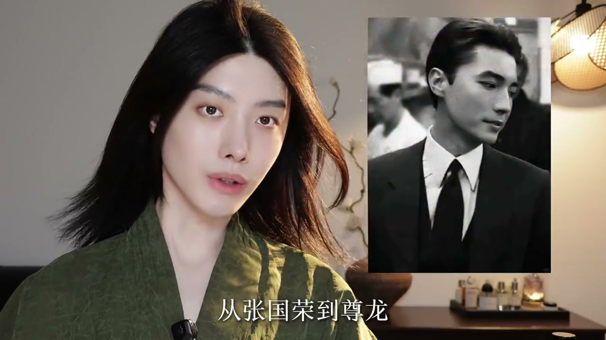
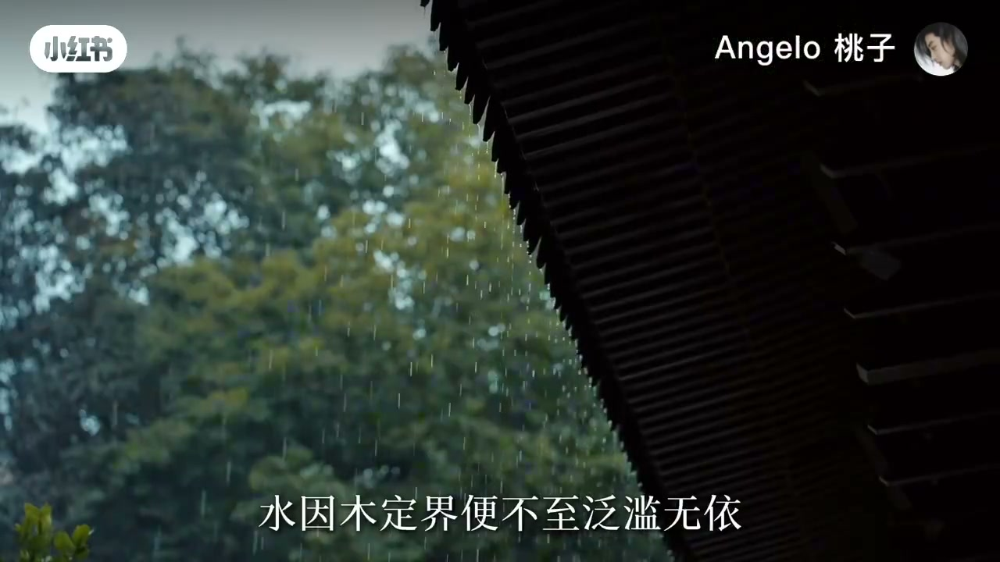
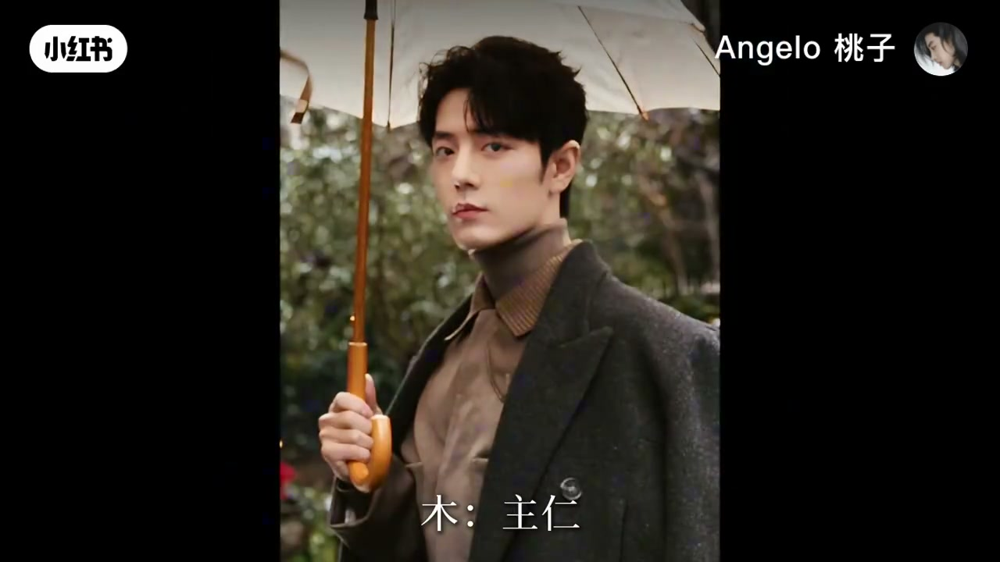
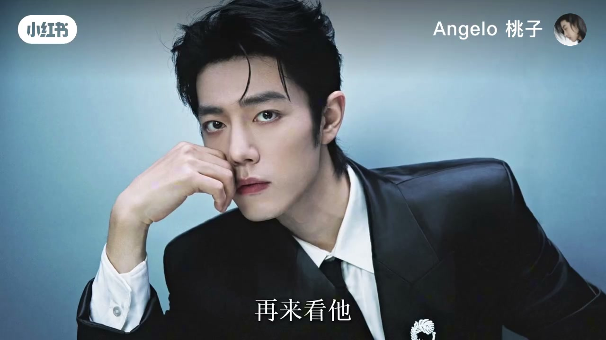
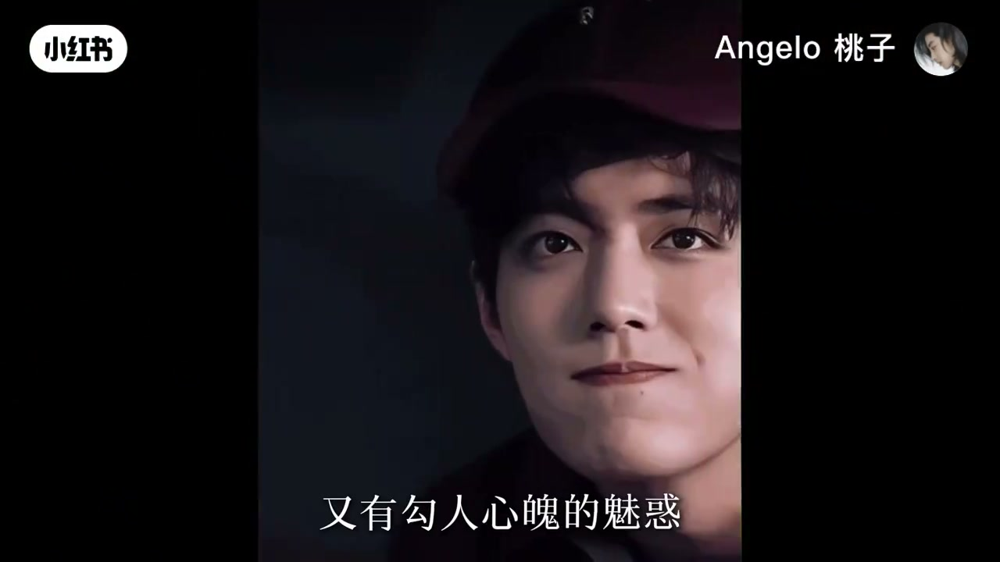
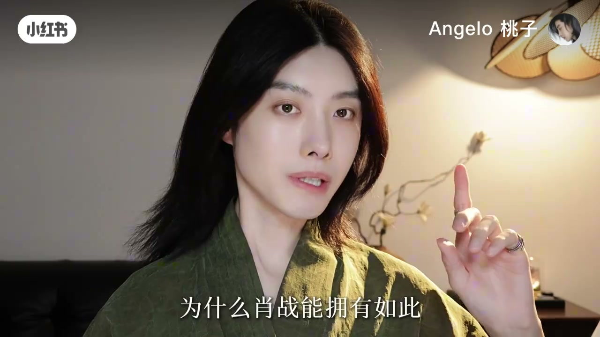
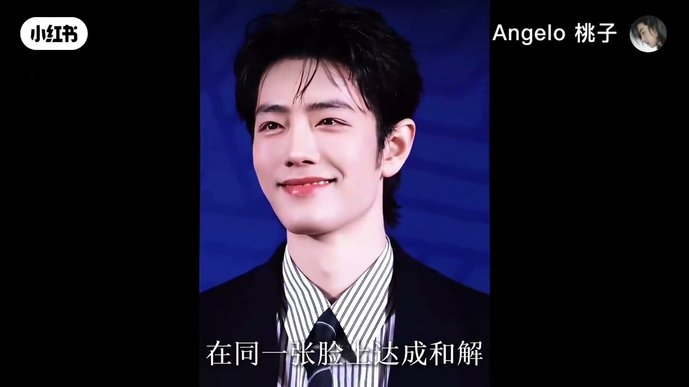

内容要点
「Angelo 桃子」用约四分钟，把肖战的脸读成「水木山海」样本：真正高级的美感不是单一元素拉满，而是对立力量在同一张脸上对冲共存。骨像讲木与大地承托，五官讲水的流动滋养；粉丝黏性被解释为「既想保护他又想被他保护」的复合情绪。下文按简体整理，专有分析框架保留为作者观点。
知识结构
典型美感=对立力量共存；肖战被视为五星能量体系里的极致样本。
木得水滋、水因木定；山/海/林在脸上交织出张力。
窄长木型面 + 下颌线清晰、颧骨高而内收 →「大地承载力」与安全感。
瑞凤眼、圆润鼻头、薄翘唇：柔美与魅惑来自水的流动。
男性承载力与女性细腻感共存，制造「保护/被保护」双冲动；高级审美拒绝单一标签。
作者结论：一眼万年靠的是整体能量磁场，而不是某个五官；水木对冲让刚正与柔情同时成立。属能量美学个人解读，非医学或相学定论。
00:00-01:22雌雄同体审美与水木命题
开场先抛现象：娱乐圈隔一段时间就会冒出「男生女相」顶流。作者切入五星能量美学——真正典型的美感从来不是单一元素的极致，而是两种对立力量在同一张脸上完美对冲与共存；这被称作「雌雄同体审美」的本质。
肖战的脸被标为该审美在体系里最极致的样本，并给出口诀式概括：木得水滋养便能蔚然成林，水因木定界便不致泛滥无依。自然意象落到脸上：有山有水有林有海，木枝骨与水的气韵交织，张力藏在「山与海」的堆叠里。


01:22-02:46骨像是山，五官是水
骨像被定义为「脸上推不倒的东西」：木性能量与大地承载力。肖战脸型被说成菱形与鹅蛋的结合、窄长标准木型面，适合艺术表演行业；重点却不在脸型而在支撑——下颌骨发育优异、下颌线清晰、拐点偏低，配合双点下巴，作者称之为大地承载力，对应踏实、靠谱、能扛事的第一印象。
颧骨高而内收，从颧骨到下颌线呈现平行四边形光影，被读作轻薄却有力的骨骼安全感。若骨像是山的框架，五官就是水系：狭长微垂、眼尾微翘的「瑞凤眼」是最杀人处；鼻头圆润不锋利、唇薄而翘，带来江南书生式的柔美，打破「粗粝男性」刻板。



02:46-04:05双重吸引力与一眼万年
水木相生、山海相应：水滋养木的灵性，木锚定水的沉静，融成温润磁场。作者直接给粉丝黏性结论——同时拥有男性承载力与女性细腻感：水系柔情诱发「想联系、爱护」的母性柔情，木系下颌与高颧骨又持续释放依赖与被保护的安全感。
「既想保护他又想被他保护」被称作水木能量的顶级吸引力。收束上升到方法论：一眼万年往往不是某个五官，而是整体能量磁场；真正高级的审美不把人压缩成单一特质，而是让矛盾力量在同一张脸上和解。结尾邀请评论区点名下一位明星。


完整转录（97段）
以下文本由 Whisper medium 模型自动转录，可能存在少量识别误差，已尽可能修正。
为什么娱乐圈每隔时地年就会冒出一个男生女相的顶流
在五星能量美学中
真正典型的美感从来不是单一元素的极致
而是两种对立力量在同一张脸上的完美对冲与共存
这就是雌胸同体审美的本质
而肖战的脸恰好是这种审美
在五星能量体系里最极致的一个样本
我称它为
木得水滋养便能未然成灵
水阴木定解便不致泛滥无一
木与水的结合在自然中是最有生命力的景象
有山 有水 有林 有海
在他脸上正是这种木枝骨与水池运的交织
构成了他极其独特的张力
而肖战脸上的秘密就藏在这山与海的堆花里
我们先说骨像
骨像是什么
骨像是一个人脸上推不倒的东西
这是他身上的木性能量与大地承载力
肖战的脸型是零星脸与鹅蛋脸的结合
属于典型的窄长形标准木型面
木主人 主相上生长的力量
这种面向天然带有竖卷起
非常适合从事艺术 文化与表演行业
但重点不在脸型
在支撑
你看他的下河骨发育极其优异
下河线清晰俐落 拐点偏低
配合双点位的下巴
在能量美学体系里
这叫做大地的承载力
有一种承载万物的稳重与承托力
这就是为什么肖战给人的第一印象里
会有一种踏实 靠谱 能扛势
经得起岁月打磨的刚正气度
这也符合他务徒人的特点
再来看 他拳骨高而内收
从拳骨到下河线的构度
呈现出极具几何美的平行四边形
形成完美的光影折射
这赋予了他轻薄的骨骼力量
是他身上男性安全感的来源之一
如果说骨像是山姆的框架
那他的五官就是水系能量的流动与滋养
赋予了他极为细腻的柔美与魅惑
肖战最杀人的是眼睛
他的眼型狭长 微微下垂
眼尾微翘 眼头下钩
这是最标准的瑞凤眼
水煮智慧与情姿
他的眼睛清澈如深潭水
笑起来使水波涟漪
既有无故感 也有勾人心魄的魅惑
包含了无尽的情绪张力
再说鼻子 鼻子虽高挺
但鼻头圆润有柔
没有过于锋利的攻击性
反而呈现出一种温润如玉的亲和力
像被山泉打磨过的磐石
蠢弱江南 嘴巴薄而翘
打破了传统男性的粗利感
带有一种江南书生般的柔美与精致感
水木相生 山海相应
水滋养了木的灵性
木卯定了水的沉静
这种水木山海系的能量
让他既有大山的沉稳
也有江海的灵动
融会成一种无与伦比的温润磁场
为什么肖战能拥有如此庞大且忠诚的粉丝群
我直接说结论
那是因为在他身上同时拥有了男性的承载力
与女性的细腻感 完美共存
女生看到他一方面会被他眼睛里的水系柔情所打动
觉得亲切柔软
仿佛看到自己内心的映射
从而萌发出想要联系他
爱护他的母爱与柔情
但同时呢
他稳固的木系下河与高把骨像
又在源源不断的释放出一种坚实的安全感
让人情不自禁的想去依赖他 被他保护
这种既想保护他 又想被他保护的负荷情绪
正是水木能量所产生的顶级吸引力
每个人的脸其实都蕴含著属于自己的能量场
你对一个人一眼万年的瞬间
往往不是因为具体的某个五官
而是被他整体所散发出的能量磁场所击中
这就是能量美学的奥秘
而真正高级的审美
从来不是把一个人压缩成单一特质
而是让两种看似矛盾的力量
在同张脸上达成和解
这才是一眼万年的真正秘密
骚战的水木系山海能量场你感受到了吗
还想听我用能量美学分析哪位明星
评论区告诉我